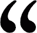

 Computer sind die klügsten Idioten die es gibt. - Norman Mailer
There are 10 types of people in the world... those who understand binary and those who don't.
Nicht als ob man meinte, die Liebe sei nicht so wichtig. Die Menschen hungern geradezu danach; sie sehen sich unzählige Filme an. die von glücklichen oder unglücklichen Liebesgeschichten handeln, sie hören sich Hunderte von kitschigen Liebesliedern an - aber kaum einer nimmt an, dass man etwas tun muss, wenn man es lernen will zu lieben. - Erich Fromm
Was immer geschieht: Nie dürft ihr so tief sinken, von dem Kakao, durch den man euch zieht, auch noch zu trinken. - Erich Kästner
Big data is like teenage sex: everyone talks about it, nobody really knows how to do it, everyone thinks everyone else is doing it, so everyone claims they are doing it. – Dan Ariely
Die, die grundlegende Freiheiten aufgeben, um vorübergehend ein wenig Sicherheit zu bekommen, verdienen weder Freiheit noch Sicherheit. - Benjamin Franklin
Hunderte gehen. Eine Handvoll bleibt. Nur einer blickt zurück. - 300
Die Kinder lernen in der Schule, daß Ehrlichkeit, Lauterkeit und die Sorge um das Seelenheil die leitenden Prinzipien des Lebens sein sollten, während das 'Leben' lehrt, daß die Befolgung diese Grundsätze uns bestenfalls zu weltfremden Träumern macht. - Erich Fromm
Ein Hacker ist ein Mensch, der mit seiner Kaffeemaschine auch eine Suppe kochen kann - Wau Holland
Hier verleiht nur der Verstand Macht. - Batman Begins
So many people live within unhappy circumstances and yet will not take the initiative to change their situation because they are conditioned to a life of security, conformity, and conservatism, all of which may appear to give one peace of mind, but in reality nothing is more dangerous to the adventurous spirit within a man than a secure future. The very basic core of a man's living spirit is his passion for adventure. The joy of life comes from our encounters with new experiences, and hence there is no greather joy than to have an endlessly changing horizon, for each day to have a new and different sun. - Chris McCandless
Liebe heißt, dass wir uns dem anderen ganz ohne Garantie ausliefern. - Erich Fromm
I'll tell you a riddle. You're waiting for a train, a train that will take you far away. You know where you hope this train will take you, but you don't know for sure. But it doesn't matter. How can it not matter to you where that train will take you? - Inception
Computer sind nutzlos. Sie geben uns nur Antworten. - Pablo Picasso
It is not clear that intelligence has any long-term survival value. - Stephen Hawking
Im Kern eines guten Witzes steckt immer eine Katastrophe - George Tabori
Das Ende, die unvermeidliche Apokalypse, sehe ich für unsere Wirklichkeit, den totalen Zusammenbruch aller Systeme als Folge unserer Abwendung von allem, was wahr in uns ist. - Assi Dayan
Wer sagt: hier herrscht Freiheit, der lügt, denn Freiheit herrscht nicht - Erich Fried
Unwissenheit ist ein Segen. - Matrix
Ziehe niemals in den Krieg, vorallem nicht mit dir selbst. - Lord of War
in /dev/null nobody can hear you scream!
Das, wobei unsere Berechnungen versagen, nennen wir Zufall. - Albert Einstein
Confront your soldiers with the deed itself; never let them know your design - Sun-Tzu
Bizarre Klänge durchströmen unseren Geist. Monotonie legt unser Denken lahm. Maschinen machen Musik und wir alle werden danach tanzen...wohlwollend - Bernd Schönburg
Das Leben kommt auf alle Fälle aus einer Zelle, doch manchmal endets auch - bei Strolchen - in einer solchen. - Heinz Erhardt
Der Vorteil der Klugheit besteht darin, daß man sich dumm stellen kann. Das Gegenteil ist schon schwieriger. - Kurt Tucholsky
Was ist die Matrix? Kontrolle. Die Matrix ist eine Computergenerierte Traumwelt, die erschaffen wurde um uns unter Kontrolle zu halten. - Matrix
Was ist die Wirklichkeit? Wie definiert man das: Realität? Wenn du darunter verstehst, was du fühlst, riechen, schmecken oder sehen kannst ist Wirklichkeit nichts weiter als elektrische Signale interpretiert von deinem Verstand. - Matrix
Eine der übelsten Dinge ist es, einen Menschen von der Kommunikation auszuschliessen. - Wau Holland
Erst wenn die letzte Kritik zensiert, die letzte Satire gelöscht, Und der letzte Internetuser erfasst ist, werdet ihr merken, dass es im Netz immer noch Kinderpornografie gibt.
Der Computer rechnet mit allem nur nicht mit seinem Besitzer. - Dieter Hildebrandt
Every one sees what you appear to be, few really know what you are. - Niccolo Machiavelli
Manchmal muss man verstummen, um gehört zu werden.
Ich will nicht sagen: "Weinet nicht", denn nicht alle Tränen sind von Übel. - Gandalf
Auge um Auge - und die ganze Welt wird blind sein. - Mahatma Gandhi
Der Computer ist die logische Weiterentwicklung des Menschen: Intelligenz ohne Moral. - John James Osborne
Der Konsument ist der ewige Säugling, der nach der Flasche schreit. - Erich Fromm
Für den Triumph des Bösen reicht es, wenn die Guten nichts tun! - Edmund Bruke
Es ist besser eine Frage zu diskutieren, ohne sie zu entscheiden, als eine Frage zu entscheiden, ohne sie zu diskutieren. - Joseph Joubert
Marx geht es wie der Bibel: Er wird viel zitiert und kaum verstanden. - Erich Fromm
Dum spiro, spero. (Solange ich atme, hoffe ich.) - Marcus Tullius Cicero
Durch die Maschine ist die Zeit zur Beherrscherin des Menschen geworden. - Erich Fromm
Wer Visionen hat, sollte zum Arzt gehen. - Helmut Schmidt
Wer der Meinung ist, daß man für Geld alles haben kann, gerät leicht in den Verdacht, daß er für Geld alles zu tun bereit ist. - Benjamin Franklin
Die Freiheit ist ein Luxus, den sich nicht jedermann gestatten kann. - Otto Fürst von Bismarck
Der Diplomat denkt erst zweimal nach, bevor er nichts sagt - Winston Churchill
Ein alter Mann stirbt. Ein junges Mädchen lebt. Fairer Tausch. - Sin City
Im Computer kann man Unmengen von Daten speichern, die man nicht bräuchte, wenn man keinen Computer hätte. - Erhard Blanck
Alle Revolutionen haben bisher nur eines bewiesen, nämlich, dass sich vieles ändern läßt, bloß nicht die Menschen. - Karl Marx
Mehr als die Vergangenheit interessiert mich die Zukunft, denn in ihr gedenke ich zu leben. - Albert Einstein
Probleme kann man niemals mit derselben Denkweise lösen, durch die sie entstanden sind. - Albert Einstein
Ein Ring sie zu knechten, sie alle zu finden. Ins Dunkle zu treiben, und ewig zu binden. - Sauron
Wer kämpft, kann verlieren. Wer nicht kämpft, hat schon verloren. - Bertolt Brecht
Aus großer Kraft folgt große Verantwortung - Uncle Ben
Wahrheit ist die Erfindung eines Lügners. - Heinz von Foerster
Es gibt zwei Dinge die unendlich sind. Das Weltall und die Menschliche Dummheit. Beim Weltall bin ich mir aber nicht so sicher - Albert Einstein
Man is a pupil, pain is his teacher. - Alfred de Musset
Wegen des fehlenden Nagels ging das Hufeisen verloren. Wegen des fehlenden Hufeisens ging das Pferd verloren. Wegen des verlorengegangenen Pferdes konnte die Nachricht nicht überbracht werden. Wegen der nicht überbrachten Nachricht wurde der Krieg verloren. - Chinesisches Sprichwort
Wo kämen wir hin, wenn jeder sagte, wo kämen wir hin und keiner ginge, um zu sehen, wohin wir kämen, wenn wir gingen. - Kurt Marti
Die schönsten Träume von Freiheit werden im Kerker geträumt. - Friedrich Schiller
Als du auf die Welt kamst, lächelten alle, nur du weintest. Lebe so, dass wenn du stirbst alle weinen, nur du lächelst!
Der Computervirus ist das Tschernobyl der Datenverarbeitung. - Wau Holland
Hacken ist mehr als nur ein Verbrechen, es ist ein Überlebenstraining! - Hackers
Naturwissenschaft ist der Glaube an die Unwissenheit der Experten. - Richard P. Feynman
Wenn es mehr als eine Möglichkeit gibt, etwas zu tun, und eine von diesen Möglichkeiten schief gehen kann, dann kommt irgendwer daher und probiert sie aus. - Edward A. Murphy
Ein alter Mann stirbt. Ein junges Mädchen lebt. Fairer Tausch. - Sin City
Das Schönste, was wir erleben können, ist das Geheimnisvolle. Es ist das Grundgefühl, das an der Wiege von wahrer Kunst und Wissenschaft steht. - Albert Einstein
The purpose of computing is insight, not numbers. - Richard Hamming
Die effiziente Anwendung seiner Fähigkeit zur Abstraktion muss als lebenswichtigste Aktivität eines kompetenten Programmierers angesehen werden. - Dijkstra, The Humble Programmer
Wer glaubt, etwas zu sein, hat aufgehört, etwas zu werden. - Philip Rosenthal
All it takes is one bad day to reduce the sanest man alive to lunacy. That's how far the world is from where i am. Just one bad day. - The Joker
Der übernächste Krieg wird nur noch mit Pfeil und Bogen entschieden. - Albert Einstein
Man wird am besten für seine Tugenden bestraft. - Friedrich Nietzsche
Wie war's in der Schule? - Hm. - Und was hast du da heute gelernt? - Was Rache ist. - Hackers
Es gibt zwei Dinge, bei deren Herstellung man besser weg schaut, damit einem nicht übel wird: Wurst und Gesetze! - Winston Churchill
Viele sind hartnäckig in Bezug auf den einmal eingeschlagenen Weg, wenige in Bezug auf das Ziel. - Friedrich Nietzsche
Waffenhändler regieren die Welt, denn die Anderen sind viel zu sehr damit beschäftigt sich gegenseitig umzubringen. - Lord of War
Hunderte gehen. Eine Handvoll bleibt. Nur einer blickt zurück. - 300
Es ist das Schicksal des Genies, unverstanden zu bleiben. Aber nicht jeder Unverstandene ist ein Genie. - Ralph Waldo Emerson
Wer immer tut, was er schon kann, bleibt immer das, was er schon ist. - Henry Ford
Software is like Sex, it's best if it's free. - Linus Thorwald, Erfinder von Linux
Hier verleiht nur der Verstand Macht. - Batman Begins
Kennst du das Gefühl, wenn du nicht weißt ob du wach bist oder noch träumst?! - Matrix
Computer sind großartig. Mit ihnen macht man die Fehler viel schneller. - Bert. Sutherland
Ich glaube nur an Statistiken, die ich selbst gefälscht habe. - Winston Churchill
Willkommen zu meiner Show "Hack the Planet"! - Hackers
Man kann alles richtig machen und doch das Wichtigste versäumen. - Alfred Andersch
'Vernünftig' ist in den Augen der meisten Menschen, worüber sich die meisten Menschen einig sind; 'vernünftig' hat für die meisten nichts mit Vernunft zu tun. - Erich Fromm
Diplomatie ist die Kunst, mit hundert Worten zu verschweigen, was man mit einem einzigen Wort sagen könnte. - Saint-John Perse
I worry about my child and the Internet all the time, even though she's too young to have logged on yet. Here's what I worry about. I worry that 10 or 15 years from now, she will come to me and say 'Daddy, where were you when they took freedom of the press away from the Internet?' - Mike Godwin
Ich sah die besten Köpfe meiner Generation zerstört vom Wahnsinn, ausmergelt hysterisch nackt, wie sie im Morgengrauen sich durch die Nebenstraßen schleppten auf der Suche nach einer wütenden Spritze, Hipster mit Engelsköpfen, süchtig nach dem alten himmlischen Kontakt zum Sternendynamo in der Maschinerie der Nacht. - Ginsberg
Intelligence is the ability to adapt to change. - Stephen Hawking
Die Welt hat nie eine gute Definition für das Wort Freiheit gefunden. - Abraham Lincoln
Die Welt ist im Wandel. Ich spüre es im Wasser. Ich spüre es in der Erde. Ich rieche es in der Luft. Vieles, was einst war, ist verloren, da niemand mehr lebt, der sich erinnert. - Galadriel
Menschen wollten Roboter erfinden, nun sind sie selbst welche. - Peter Sunde
Die Lehre von der Freiheit des Willens ist eine Erfindung herrschender Stände. - Friedrich Nietzsche
Ungeweihnte Tränen sind die schlimmsten.
In einem Meer von Schmerz ertrinken die einen; die anderen lernen, darin zu schwimmen.
Nicht alle sind glücklich,die glücklich scheinen.Manche lachen nur,um nicht zu weinen.
A strange game. The only winning move is not to play. - wargames
Das Unbewußte ist viel moralischer, als das Bewußte wahrhaben will. - Sigmund Freud
Warum tun meine Augen so weh? ... Weil du sieh noch nie benutzt hast. - Matrix
Linux ist wie eine Freundin.Schön, sexy und naja, ganz viel rumfummeln.
Yes, I am a criminal. My crime is that of curiosity. My crime is that of judging people by what they say and think, not what they look like. My crime is that of outsmarting you, something that you will never forgive me for. - Loyd Blankenship (The Mentor)
In vielen der etwas lässigeren Zivilisationen am äußersten Ostrand der Galaxis hat Sie die große Encyclopaedia Galactica als Standard-Nachschlagewerk für alle Kenntnisse und Weisheiten inzwischen längst abgelöst. Denn obwohl sie viele Lücken hat und viele Dinge enthält, die sehr zweifelhaft oder zumindest wahnsinnig ungenau sind, ist sie dem älteren und viel langatmigeren Werk in zweierlei Hinsicht überlegen. Erstens ist sie ein bisschen billiger und zweitens stehen auf ihrem Umschlag in großen, freundlichen Buchstaben die Worte KEINE PANIK. - Per Anhalter durch die Galaxis
Die Apokalypse des Seins ist seine reflexion.
Wer von Hoffnung lebt, wird eines Tages verhungern.
Wenn man einem Menschen trauen kann, erübrigt sich ein Vertrag. Wenn man ihm nicht trauen kann, ist ein Vertrag nutzlos. - Jean Paul Getty
Man kann das Leben nur rückwärts verstehen, aber man muss es vorwärts leben.
Was man zu verstehen gelernt hat, fürchtet man nicht mehr. - Marie Curie
A strange game. The only winning move is not to play. - Wargames
Weil Denken die schwerste Arbeit ist, die es gibt, beschäftigen sich auch nur wenige damit. - Henry Ford
Wenn wir die Gründe für das Verhalten der anderen verstehen könnten, würde plötzlich alles einen Sinn ergeben. - Sigmund Freud
Der arme Nutzer erhält ein Seil, mit dem er sich selbst erhängen kann - das ist etwas, was ein Standard nicht tun sollte - Ron Rivest
Bevor wir die Welt verändern, sollten wir dafür sorgen sie nicht zu Grunde zu richten!
Es nützt der Freiheit nichts, dass wir sie abschaffen, um sie zu schützen. - Wolfgang Thierse
Nur der ist weise, der weiß, daß er es nicht ist - Sokrates
Ich weiß nicht immer wovon ich rede, aber ich weiß, dass ich recht habe! - Muhammed Ali
Treffen sich zwei Planeten. Sag der Eine: Wie geht es? Antwortet der Andere: Schlecht, ich habe Menschen. Sagt der Erste: Das hatte ich auch mal, das geht vorbei.
Derjenige, der seinen Trieb verleugnet, verleugnet genau das, was ihn zum Menschen macht. - Matrix
Wenn Baumeister Gebäude bauten, so wie Programmierer Programme machen, dann würde der erste Specht, der vorbeikommt, die Zivilisation zerstören. - Edward A. Murphy
Niemand kennt den Tod. Es weiß auch keiner, ob er nicht das größte Geschenk für den Menschen ist.
Es gab eine Zeit, als Zeitungen sagten, nur zwölf Menschen verstünden die Relativitätstheorie. Ich glaube nicht, dass es jemals eine solche Zeit gab. Auf der anderen Seite denke ich, es ist sicher zu sagen, niemand versteht Quantenmechanik. - Richard P. Feynman
Von den vielen Dingen die verloren mir sind gegangen hab ich am meisten an meinem Verstand gehangen - Ozzy Osbourne
Willkommen in der Wüste der Wirklichkeit. - Matrix
Revolutionen sind Zeiten, in denen der Arme seiner Rechtschaffenheit, der Reiche seines Reichtums und der Unschuldige seines Lebens nicht sicher ist. - Joseph Joubert
Was isst ein Informatiker morgens um halb 10 in Deutschland? ... Knoppix - Filou
Kenne Dich selbst, kenne Deinen Feind und Du musst einhundert Schlachten nicht fürchten - Sun Tzu
Die Menschheit ist zu weit vorwärts gegangen, um sich zurückzuwenden und bewegt sich zu rasch, um anzuhalten. - Winston Churchill
Phantasie ist wichtiger als Wissen, denn Wissen ist begrenzt. - Albert Einstein
Die meisten Computerprobleme sitzen zwischen Tastatur und Stuhl. - Klaus Klages
Erst kommt das Fressen, dann die Moral. - Bertolt Brecht
Je mehr die Menschen haben, desto mehr begehren sie. - Justinus
Das Leben ist eine Chance - nutze sie.
Das Leben ist Schönheit - bewundere sie.
Das Leben ist Seligkeit - genieße sie.
Das Leben ist ein Traum - mach daraus Wirklichkeit.
Das Leben ist eine Herausforderung - stelle dich ihr.
Das Leben ist Pflicht - erfülle sie.
Das Leben ist ein Spiel - spiele es.
Das Leben ist kostbar - geh sorgfältig damit um.
Das Leben ist Reichtum - bewahre ihn.
Das Leben ist Liebe - erfreue dich an ihr.
Das Leben ist ein Rätsel - durchdringe es.
Das Leben ist ein Versprechen - erfülle es.
Das Leben ist Traurigkeit - überwinde sie.
Das Leben ist eine Hymne - singe sie.
Das Leben ist eine Tragödie - ringe mit ihr.
Das Leben ist ein Abenteuer - wage es.
Das Leben ist Glück - verdiene es.
Das Leben ist das Leben - verteidige es. - Mutter Teresa